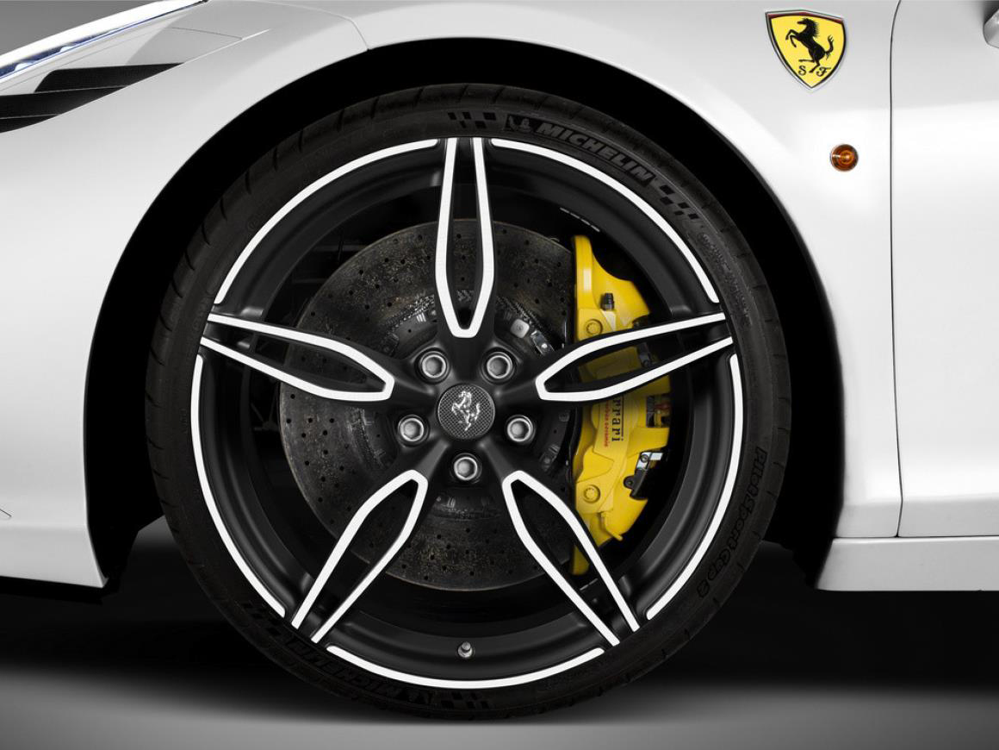
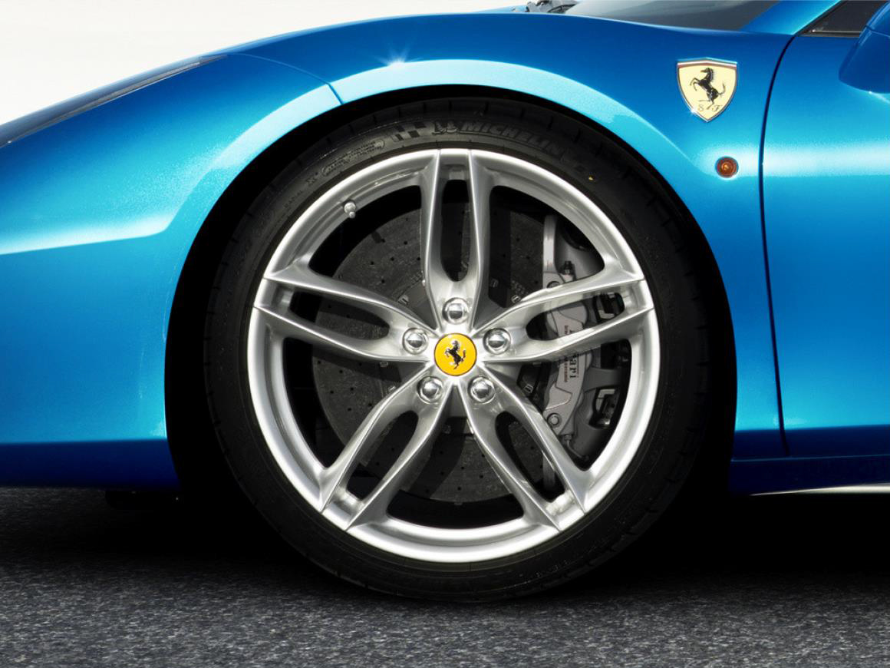
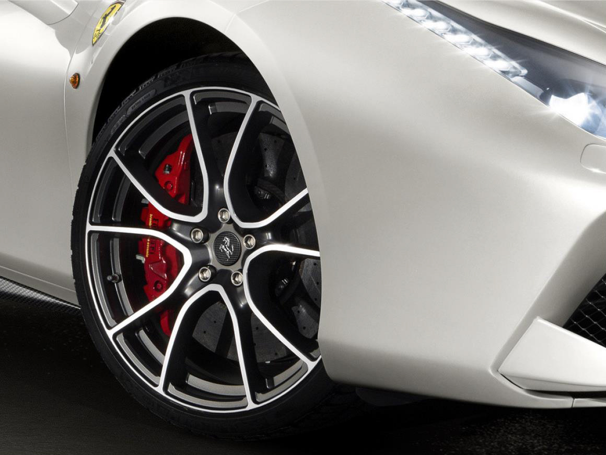
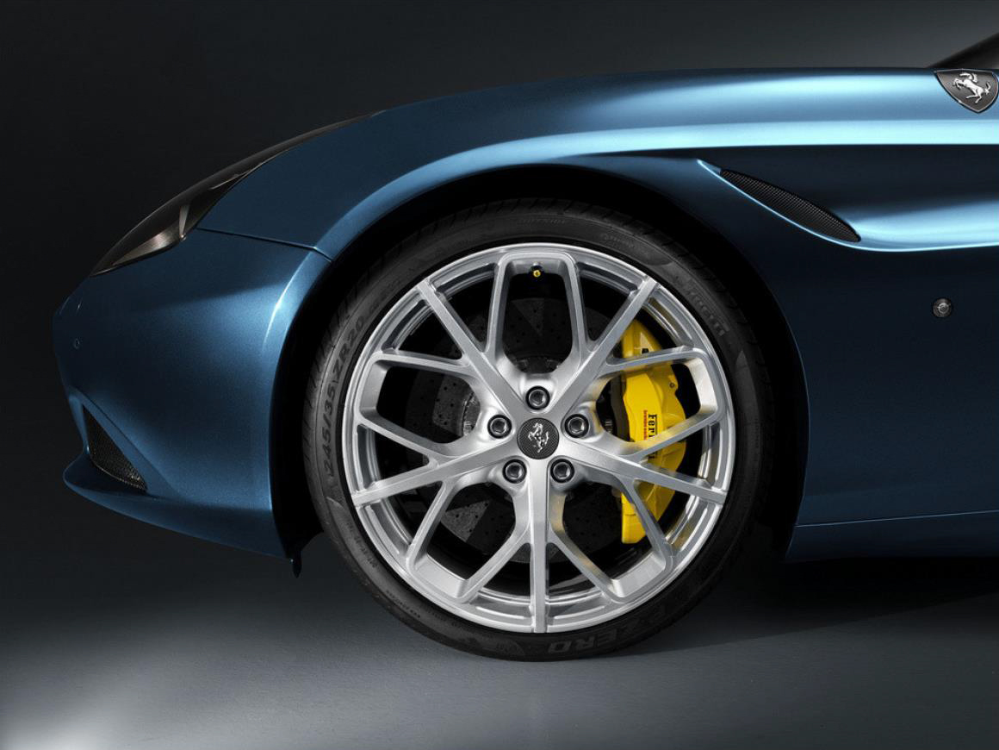

Ferrari Genuine法拉利精品配件擁有種類最為齊全的原廠各式選配件，而且每一組配件都是透過Ferrari法拉利嚴苛生產標準所打造，並在追求卓越品質的同時也不斷研發質地更輕、強度更高且更具視覺吸引力的設計與材質，例如鈦合金和Alutex，以滿足對於性能、外觀與內裝呈現有著高要求的車主們。
Ferrari Genuine法拉利原廠精品配件 – 鍛造鋁合金輪圈
要製成一只鍛造鋁合金輪圈所需的技術和工法，其複雜與難易度可是不下於碳纖維複合材質，鍛造技術是將金屬預熱或未預熱之材料藉由外加壓力下達到金屬的塑性變形，施加外力通常是透過強力的鍛打或衝壓所提供，鍛造過程中材料會有固態流動特性，故可達到較佳的機械特性，由於金屬塑性變形中會有晶粒流動的現象，使得鍛造製程之產品相較於一般製作方式，如鑄造(Casting)、衝壓(Flow Form)或機械加工具有更佳的物理特性，如強度、延性性與堅韌性。
鍛造鋁合金輪圈相較於傳統鑄造輪圈來說強度高、鋼性與精密性高，更重要的是重量也更輕，對於追求速度和準確操控的賽車和超跑而言，毫無疑問是最佳的選擇。概括而言鍛造鋁合金輪圈包含了以下優點：
重量輕、省油：直徑20吋，鋁合金輪圈約比鋼輕11％，21吋約輕22％，輪徑尺寸越大，則相差越大。
提升加速與操控性：輪圈重量輕，驅動運轉的慣性也阻力較小，提高了瞬間加速的快感及操控靈敏度。
散熱效果：鋁合金不僅熱傳性能佳，多變化的造型設計亦可以幫助通風散熱，提高輪胎壽命並降低爆胎風險。此外，還可提高剎車來令片及剎車液使用壽命，同時減少因溫度過高導致煞車失靈的危險。
測試嚴格，安全性佳：輕合金輪圈的安全性能測試較鋼材嚴格許多，安全性也更為提高。
振動隔絕性佳： 輪圈就車輛設計而言屬於簧（懸吊彈簧）下質量。簧下質量越輕，對於路面震動傳遞的隔絕性越佳，可降低車輛行駛震動及噪音
以下為您介紹Ferrari Genuine兩款主要的大尺吋鍛造鋁合金輪圈：


20吋五輻雙肋星芒式鍛造鋁圈
Ferrari法拉利精品配件所提供的多款鍛造鋁圈中，經典放射星芒式樣是相當經典且受歡迎的款式，為此Ferrari也打造出多種造型不同的放射式樣鍛造鋁圈，例如以雙肋設計與鑽石切角工法，同時達到強化結構和減輕重量的目的設計，同時外側還能依照您的喜好添上烤漆，以雙色調視覺突顯您享受經典確又結合潮流的風格，中央輪圈蓋則能以碳纖維搭配躍馬徽飾彰顯不凡，又或是使用暗色系塗裝呈現如夜色般的低調肅殺氣息，更重要的是使用這款輪圈，立刻能讓車重減少多達7公斤之譜。


20吋多輻式鍛造鋁圈
如果是嚮往高雅但又不想犧牲高性能特色的車主，此款20多輻式鍛造鋁圈可以說是絕佳的選擇，此款輪圈是Ferrari法拉利以超凡鋁合金鍛造技術打造之外，整體造型更直接由Centro Stile
Ferrari法拉利設計中心親手操刀，企圖在經典的放射造型上加以變化，塑造出如同樹枝般展開的多爪造型，呈現出現代卻經典高雅的性能風範，多爪式結構更能強化整體強度，同時也達到鍛造鋁圈輕量化之目的。